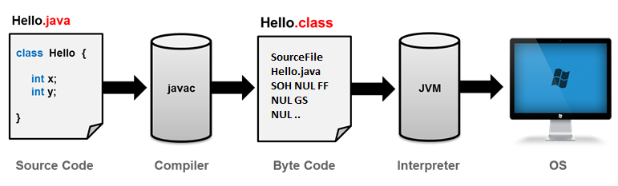

Javaتحميل و تنصيب أدوات جافا
طريقة عمل برنامج مكتوب بلغة جافا
الكود الذي تكتبه على الكمبيوتر لا يعمل بشكل مباشر بل يمر بعدة مراحل تباعاً حتى يعمل تماماً كما في الصورة التالية.

إذاً الكود الذي تكتبه أنت يسمى Source Code.
حتى يتنفذ هذا الكود, يتم تحويله إلى Byte Code بواسطة مترجم لغة جافا ( javac ) و هذا المترجم يضمن أن الكود الذي كتبته يعمل في لغة جافا.
بعدها يقوم مفسر لغة جافا ( JVM ) بتنفيذ الكود على بشكل يلائم نظام التشغيل الذي يستخدمه المستخدم سواء كان Windows, Linux, MacOS.
مصطلحات تقنية
Source Code: تعني الكود أو الشفرة المصدرية, و يقال لها أيضاً سورس كود.
Byte Code: كود الجافا الذي تم التأكد من صحته و تجهيزه لمفسر لغة جافا.
javac: إختصار لـ Java Compiler و يسمى مترجم لغة جافا. فعلياً هو برنامج يحول الكود المكتوب بلغة جافا إلى Byte Code.
Interpreter: هو برنامج مهمته تنفيذ الكود حتى يعمل كأي برنامج في حاسوب المستخدم.
JVM: إختصار لـ Java Virtual Machine و هو عبارة عن Interpreter خاص لتشغيل الـ Byte Code الذي أصله في الأساس كود جافا كأي برنامج عادي.
OS: إختصار لـ Operating System و التي تعني نظام التشغيل.
مفهوم الـ JDK و أهميته بالنسبة للغة جافا
كما لاحظت سابقاً, الكود المكتوب بلغة جافا يمر بعدة مراحل حتى يعمل. و السبب الرئيسي في ذلك أن نظام التشغيل ليس مكتوباً بلغة جافا.
من هذا المنطلق, عليك معرفة أنه حتى يتعرف نظام التشغيل الذي تستخدمه على لغة جافا تحتاج تحميل و تنصيب أدوات تطوير جافا ( Java Development Kit ) و التي يقال لها JDK.
الـ JDK بدوره يتضمن أشياء كثيرة جداً مثل:
الكلاسات الجاهزة في جافا.
الشروحات للكلاسات و الدوال الجاهزة التي تظهر لك أثناء كتابتك للكود و التي تسمى javadoc.
مترجم لغة جافا javac.
مشغل لغة جافا ( Java Runtime Environment ) الذي يختصر بـ JRE و الذي بدوره يحتوي على الـ JVM.
خلاصة
بدون الـ JDK لن يستطيع نظام التشغيل التعرف على لغة جافا. و بالتالي لن يستطيع تشغيل أي كود أو حتى برنامج جاهز مكتوب بلغة جافا.
تجهيز بيئة العمل لتطوير تطبيقات بلغة جافا
خطوات تحميل و تثبيت الـ JDK
شاهد الخطوات التالية لتتعلم كيف تقوم بتحميل و تثبيت إصدار الـ JDK الملائم لحاسوبك.
شاهد الخطوات »
خطوات تحميل و تثبيت برنامج NetBeans
شاهد الخطوات التالية لتتعلم كيف تقوم بتحميل و تثبيت إصدار برنامج NetBeans الملائم لحاسوبك.
سبب إستخدامنا لبرنامج Netbeans هو أنه مجاني, سهل الإستخدام و يساعد كثيراً في كتابة الكود.
هنا خطوات تحميله و تنصيبه.
شاهد الخطوات »
خطوات إنشاء مشروع جديد و تشغيله في برنامج NetBeans
هنا وضعنا خطوات إنشاء مشروع ( أي برنامج ) جديد في NetBeans.
إنتبه: عليك إتباع هذه الخطوات في كل مرة تريد فيها تجربة الكود على الكمبيوتر.
شاهد الخطوات »
حل مشاكل قد تتعرض لها أثناء إستخدام برنامج NetBeans
المشكلة الأولى: أحياناً عندما تقوم بإنشاء مشروع جديد ثم تضغط على أيقونة تشغيل المشروع تجد أنه يظهر لك نتيجة مشروع آخر!!!
بمعنى أنه يقوم بتشغيل مشروع آخر و ليس آخر مشروع قمت بكتابته.
المشكلة الثانية: أحياناً بسبب العمل بسرعة تقوم إغلاق إحدى النوافذ المهمة في البرنامج. مثل النافذة التي تظهر فيها كل المشاريع التي قمت بإنشائها أو النافذة التي تظهر فيها نتيجة التشغيل.
شاهد الخطوات »
الشكل العام لأي برنامج مكتوب بلغة جافا
الكلاس الأساسي في المشروع يجب أن يكون شكله كالتالي.
public class هنا يوضع إسم الكلاس {
public static void main(String[] args) {
هنا يجب أن تضع الأوامر التي ستتنفذ عند تشغيل البرنامج
}
}
في العادة الكلاس الأساسي في المشروع يتم تسميته Main مع الإشارة إلى أن هذا لا يعني أنك مجبر على تسميته كذلك.
الكود الذي يتنفذ مباشرةً عند تشغيل البرنامج هو الكود الذي نكتبه بداخل حدود الدالة main().
سنتطرق إلى مزيد من التفاصيل في الدرس التالي.
في المثال التالي قمنا بإنشاء برنامج إسمه Main, موجود بداخل مجدل إسمه main, مهمته فقط طباعة الجملة "Hello World!" عند التشغيل.
مثال
public class Main {
public static void main(String[] args) {
System.out.println("Hello World!");
}
}
•سنحصل على النتيجة التالية عند التشغيل.
Hello World!
ملاحظة
من الآن و حتى إنتهاء سلسلة دروس الجافا ستكون دروسك عبارة عن شروحات صغيرة لكل مفهوم جديد تتعلمه, و بهذه الطريقة ستفهم كل مبادئ لغة جافا.
بعد أن تتعلم جميع أساسيات و مبادئ اللغة, سنعلمك طريقة بناء تطبيقات فيها واجهة مستخدم مثل التطبيقات التي نستخدمها في حياتنا اليومية.

 محرر الويب
محرر الويب نظام الألوان
نظام الألوان محول الوحدات
محول الوحدات محلل عناوين الشبكات
محلل عناوين الشبكات